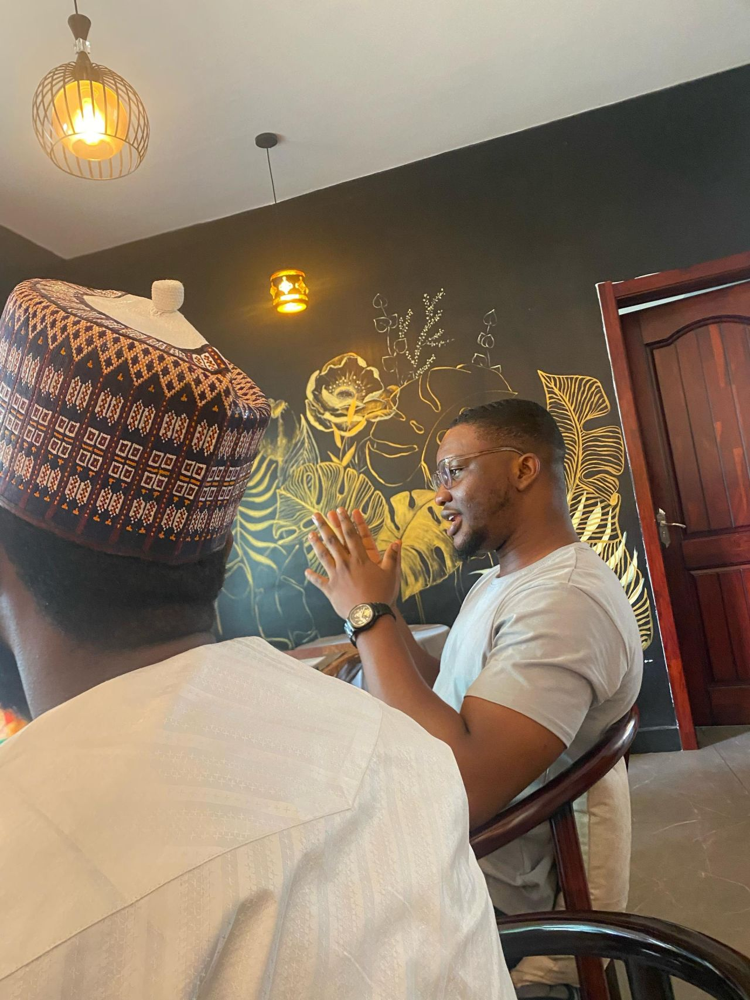
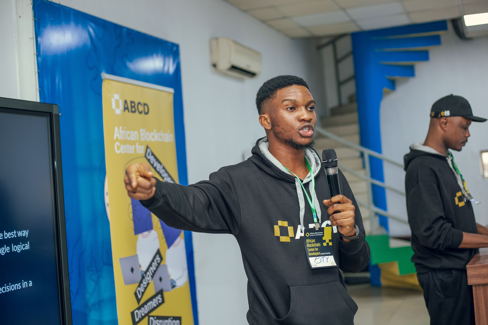
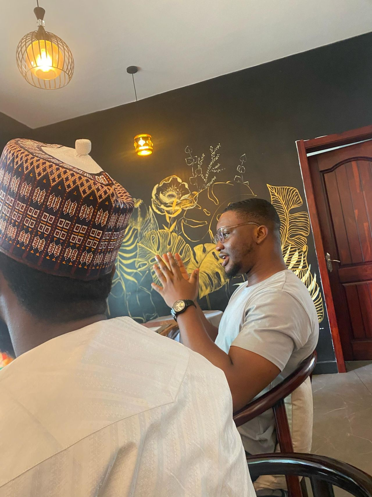
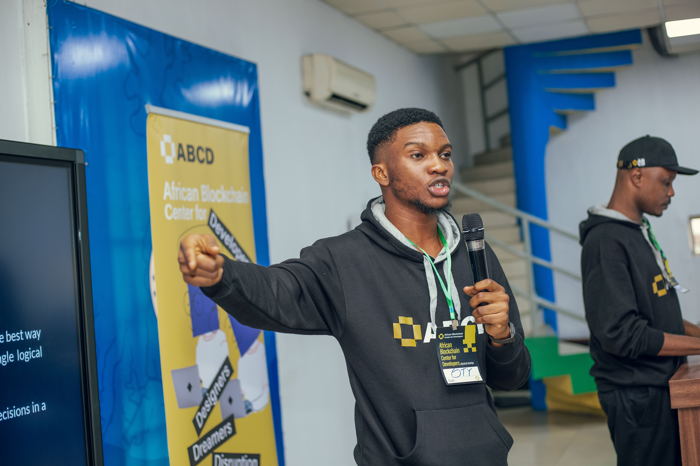

I started as a hardware intern in 2019, building IoT systems with microcontrollers. In 2020/21, I led GDSC (now GDG), part of the Google Developer ecosystem, then I began exploring blockchain tech across EVM and Cardano, and later leading developer training, global collaborations, and community growth. Since then, I’ve built backend systems and real-world asset protocols at LTO Network, and now focus on backend systems engineering, AI-powered systems, etc
With a Bachelor's in Electronics and an ongoing M.Sc. in Software Engineering, I'm also exploring research around adaptive user interfaces and agentic AI systems. In a parallel universe, you'd still find me learning endlessly, exploring leadership, building communities, writing, painting, reading documentation, and getting lost in sci-fi worlds. I'm a Christian.
 


